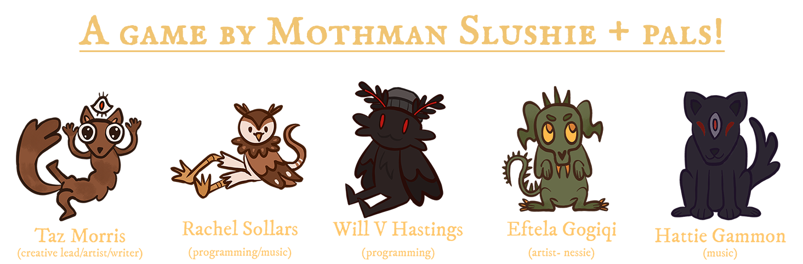

Skills Used: Reverse Engineering, C#
Play it on itch.io here!
View the repo here!
Creature Comforts is a project I joined at the end of 3rd year as a programmer to help finish and bug fix the game as their original programmer became unavailable.
This was a test at being thrust into another programmers project and having to get things to work and understand it quickly as the end of the year was about 1 month away.
I did a lot of miscellaneous tasks for creature comforts, everything from adding a dialogue skip shortcut to making the bell ring on the desk to replacing character sprites.
The most major things I did was overhaul the dialogue delivery system and create a Windows port of the game as it was a browser only game when I joined.